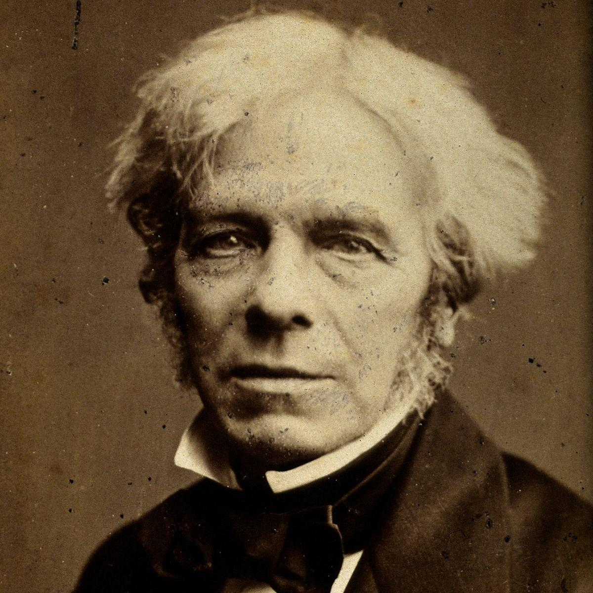
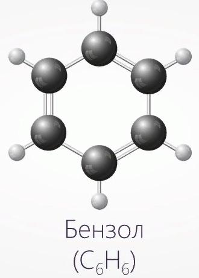
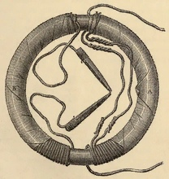
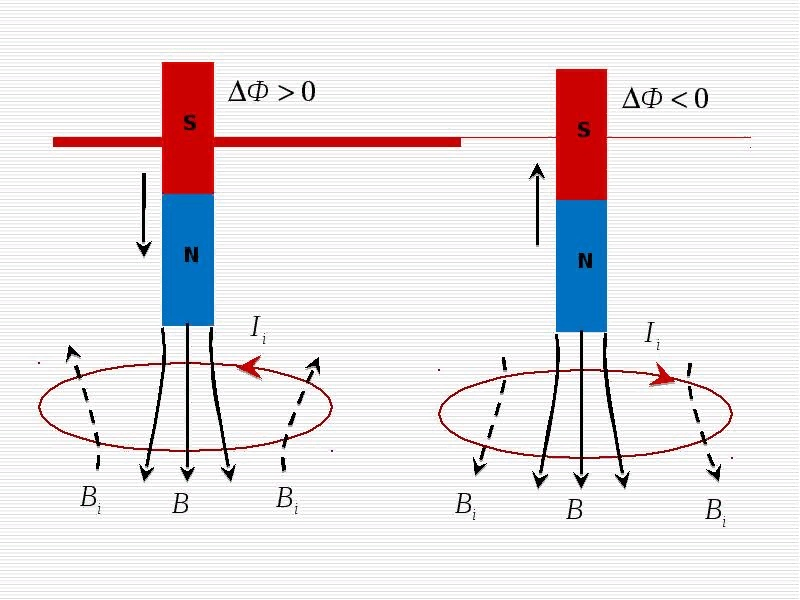

МайклФарадей — основоположник учения об электромагнитном поле, которое затем математически оформил и развил Максвелл. Основной идейный вклад Фарадея в физику электромагнитных явлений заключался в отказе от ньютонова принципа дальнодействия и во введении понятия физического поля непрерывной области пространства, сплошь заполненной силовыми линиями и взаимодействующей с веществом.

Открыл электромагнитную индукцию, лежащую в основе современного промышленного производства электричества и многих его применений. Создал первую модель электродвигателя. Среди других его открытий — первый трансформатор, химическое действие тока, законы электролиза, действие магнитного поля на свет, диамагнетизм. Первым предсказал электромагнитные волны. Фарадей ввёл в научный обиход термины ион, катод, анод, электролит, диэлектрик, диамагнетизм, парамагнетизм и другие.

«Трансформатор Фарадея»: при включении или выключении тока в одной обмотке регистрируется ток в другой. При движении магнитного сердечника внутри проволочной катушки в последней возникал электрический ток. Включение или выключение тока в проволочной катушке приводило к появлению тока во вторичной катушке, чьи витки чередуются с витками первой.

Фарадей сделал немало открытий в области химии. В 1825 году он открыл бензол и изобутилен, одним из первых получил в жидком состоянии хлор, сероводород, диоксид углерода, аммиак, этилен и диоксид азота. В 1825 году впервые синтезировал гексахлоран — вещество, на основе которого в XX веке изготовлялись различные инсектициды. Изучал каталитические реакции.